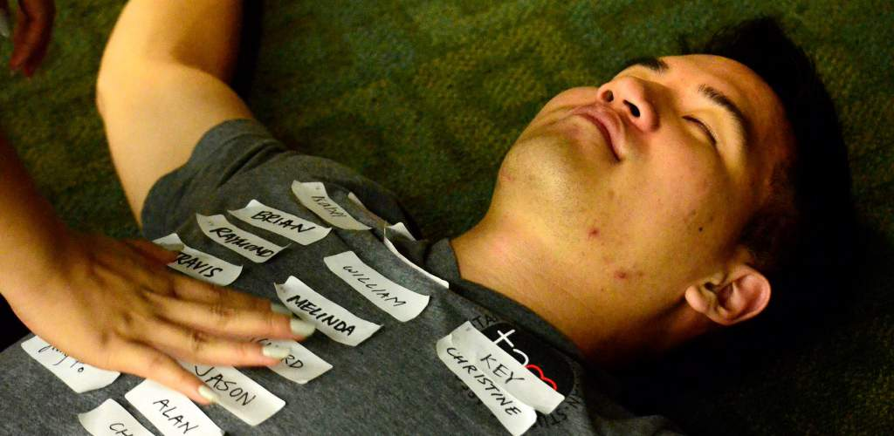

Internal JO
- This semester, the JOs for VP-I be closely involved in the planning and logistics of TASA’s largest event, Night Market, in which we will be recreating the grand night markets of Taiwan with food, games and performances.
- If you are organized, motivated, have creative ideas and want to learn more about planning large-scale events, VP-I JO would be ideal.
Special Events JO
- As a Special Events JO, you will be helping with the planning of socials, GMs, icebreakers, retreats, and banquets.
- Creative and fun ideas are ideal for this position as we will be making sure TASA members have fun.
Philanthropy JO
- JOs under Philanthropy will assist in finding and overseeing volunteer experiences for members.
- You will work with your officer to ensure TASA is contributing to the greater Austin community by organizing volunteer activities.
External JO
- VP-E JOs will be communicating with other organizations regarding club parties, mixers and fundraisers.
- You will also be contacting businesses to promote TASA for benefit nights and fundraisers.
Marketing JO
- JOs under Marketing will be involved in designing promotional material such as fliers and designing t-shirts for Night Market.
- You will also be seeing to it that TASA events are being promoted through various sources of multimedia.
Web JO
- JOs under Web Director will be involved in updating and maintaining the TASA website with event details.
- If you have some web experience or simply want to gain experience, this would be a good position for you!
Media JO
- Media JO's will help with taking pictures at events TASA hosts or participates in and posting them on social media.
Finance JO
- Finance JOs will help manage the TASA budget and funds. You will also help keep track of event costs and decide what events are financially feasible.
Communication JO
- As a Communication JO, your main focus is to be a liaison between members of TASA and the officers when it comes to providing information about our events, meetings, and opportunities through our newsletter, Facebook, Twitter, and Instagram sites.
- If you are into organization, social media, and practicing communication techniques amongst a large group of members in our community, becoming a Communication Junior Officer is perfect for you!
Athletic JO
- As a JO under the Athletic Director, you will be helping to sign up for IM sports and encouraging members to join the teams.
- You will also be asked to help plan sports-related events, such as the annual Sports Day.